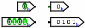

Pin
Pin
| Bibliothek: | Base |
| Eingeführt: | 2.0 Beta 1 |
| Aussehen: |  |
Verhalten
A pin is an output or an input to a circuit, depending on the value of its Type attribute. In drawing a pin, Logisim represents output pins using a circle or rounded rectangle, and input pins are represented using squares or rectangles. In either case, the individual bits of the value being sent or received is displayed within the component (except within printer view, when the component only says how many bits wide the pin is).
A pin is a convenient component for interacting with a circuit, and beginning Logisim users need not use them in any other way. But a user building a circuit using several subcircuits (as described in the `Subcircuits' section of the User's Guide) will use pins also to specify the interface between a circuit and a subcircuit. In particular, a circuit layout's pin components define the pins that appear on the subcircuit component when the layout is used within another circuit. In such a circuit, the values sent and received to those locations on the subcircuit component are tied to the pins within the subcircuit layout.
Pins
A pin component has only one pin, which will be an input to the component if the pin is an output pin, and it will be an output to the component if the pin is an input pin. In either case, its bit width matches the Data Bits attribute, and its location is specified by the Facing attribute.
Attribute
When the component is selected or being added, Alt-0 through Alt-9 alter its Data Bits
attribute, the arrow keys alter its Facing
attribute, and Alt with an arrow key alters its Label Location
attribute.
- Ausrichtung
- The side of the component where its input/output pin should be.
- Type
- Specifies whether the component is an output pin or an input pin. (Note that if the pin component is an input pin, then the pin that acts as its interface within the circuit will be an output, and vice versa.)
- Data Bits
- The number of bits for the value that the pin handles.
- Behavior
-
The Behavior attribute is only available for an input pin. The attribute specifies how unknown (floating), U, values should be treated. If the Behavior is Simple or Tri-state, the U values are sent into the layout as U values. Pull Up converts U values to 1 before being sent into the circuit layout. Pull Down converts U values to 0 before being sent into the circuit layout.
The Behavior attribute also specifies what values may be entered into the pin when it is not receiving a value from a parent circuit. Tri-state allows you to enter U values. The other settings do not allow you to enter U values. - Label
- The text within the label associated with the component.
- Label Location
- The location of the label relative to the component.
- Label Font
- The font with which to render the label.
- Radix
-
Allows you to define the base in which the values will be represented.
Example for 1010 in binary
Binary : 1010b
Octal : 12o
Signed decimal : -6s
Unsigned decimal : 10u
Hexadecimal : Ah
Float : 6.0E-07f if bit width is 16
Float : 1.4E-44f if bit width is 32
Float : 4.9E-323f if bit width is 64
Float : NaNf if bit width is not 16, 32 or 64 - Appearance
- There are two types of appearance, Classic Logisim and Arrow Shapes. See the examples at the top of the page
- Reset Value
- An input pin may be given a reset value if it does not have the Tri-state Behavior. The reset value is given as a hexadecimal value. It is loaded into the pin on a simulator reset. If the input pin has Tri-state Behavior, it is loaded with all unknown (floating), U, bits on a reset.
Verhalten des Schaltwerkzeugs
Clicking an output pin has no effect, although the pin's attributes will be displayed.
Clicking an input pin will toggle the bit that is clicked. If it is a three-state pin, then the corresponding bit will rotate between the three states.
If, however, the user is viewing the state of a subcircuit as described in the `Debugging Subcircuits' of the User's Guide, then the pin's value is pinned to whatever value the subcircuit is receiving from the containing circuit. The user cannot change the value without breaking this link between the subcircuit's state and the containing circuit's state, and Logisim will prompt the user to verify that breaking this link is actually desired.
Verhalten des Textwerkzeugs
Allows the label associated with the component to be edited.